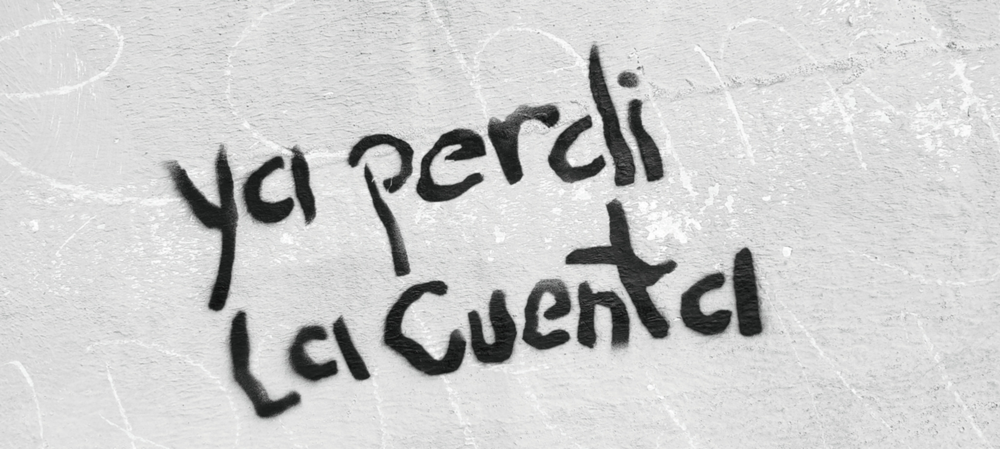

Forget the tech. (Photo by author.)
“How's your book coming?”
She smiled and watched the waiter pour the coffee.
I shrugged. “The blog was the last step.
“Finally found one? I saw you going back and forth.”
“Only Fans wouldn't verify me. I tried three times.”
“Old school,” she chuckled. “There are plenty of better models—business models—out there.”
“Look,” she continued. “You think it's about finding an app?”
“It's about finding an audience.”
Her words stung. Truth always does, especially when it's not on your side.
“Find your audience.” She softened it a bit.
“Forget the tech. You use a spoon to stir your coffee, but that's not what makes the coffee coffee. The tech is just there to…”
The roar of a bus. The marimba band started to play. A six year old hawking Chiclets nudged me. Shouldn't she be in school?
Sidewalk cafés are notorious for unfinished conversations.
Find your audience. (Photo by author.)